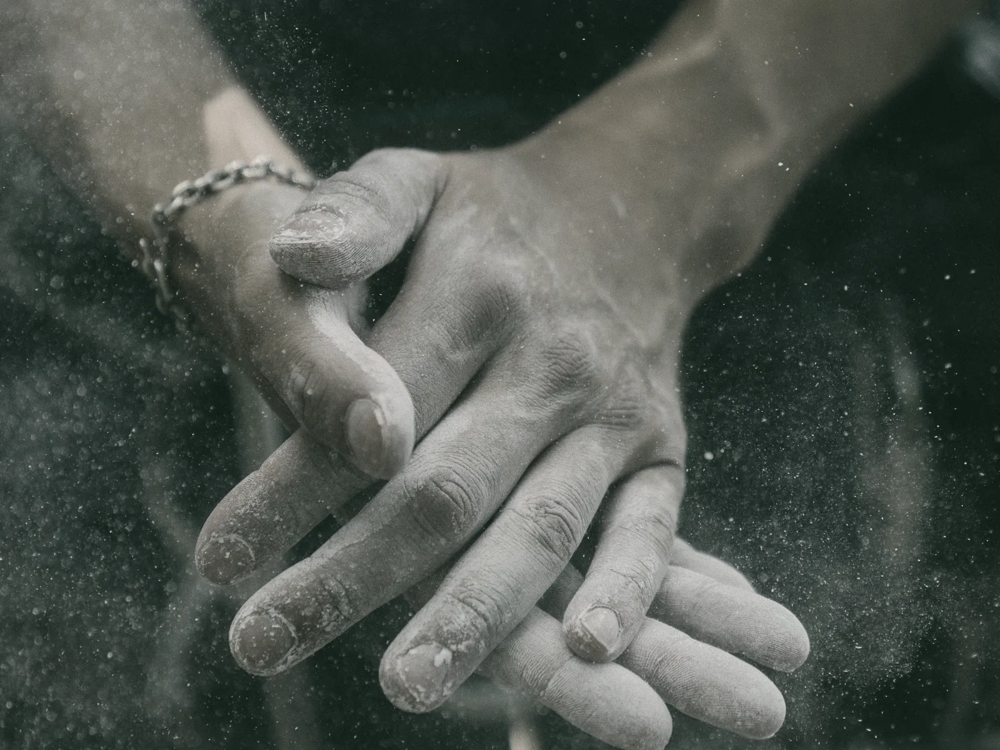
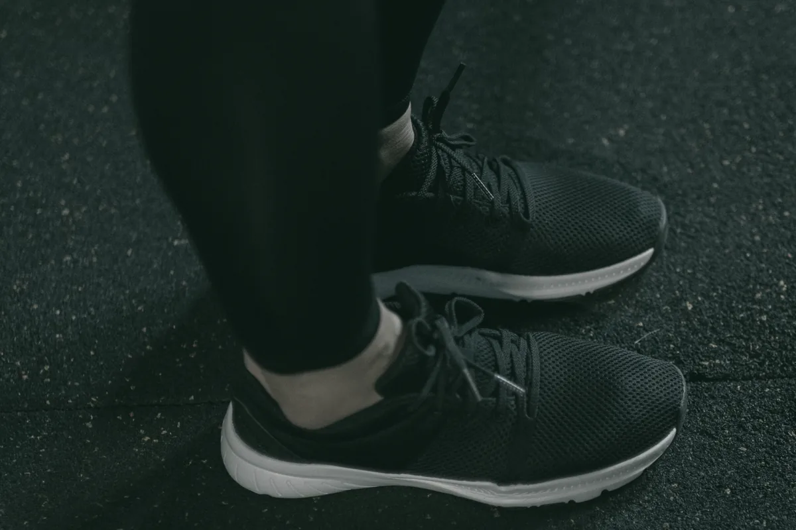
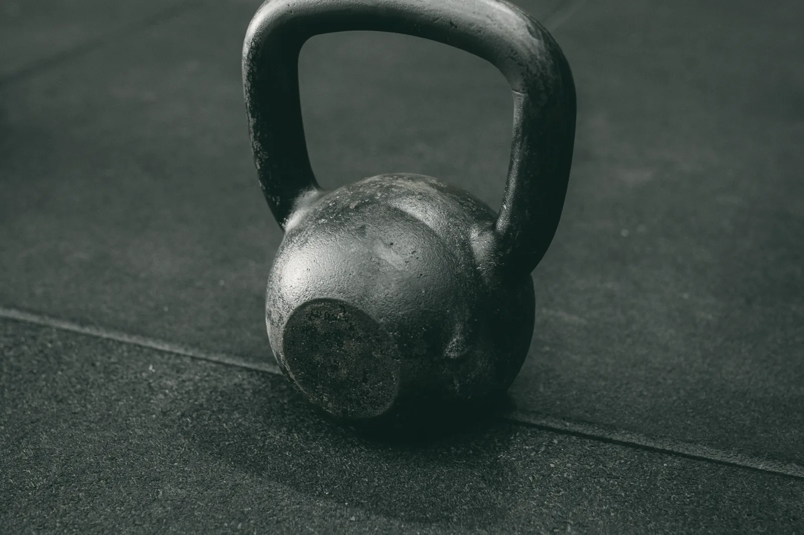
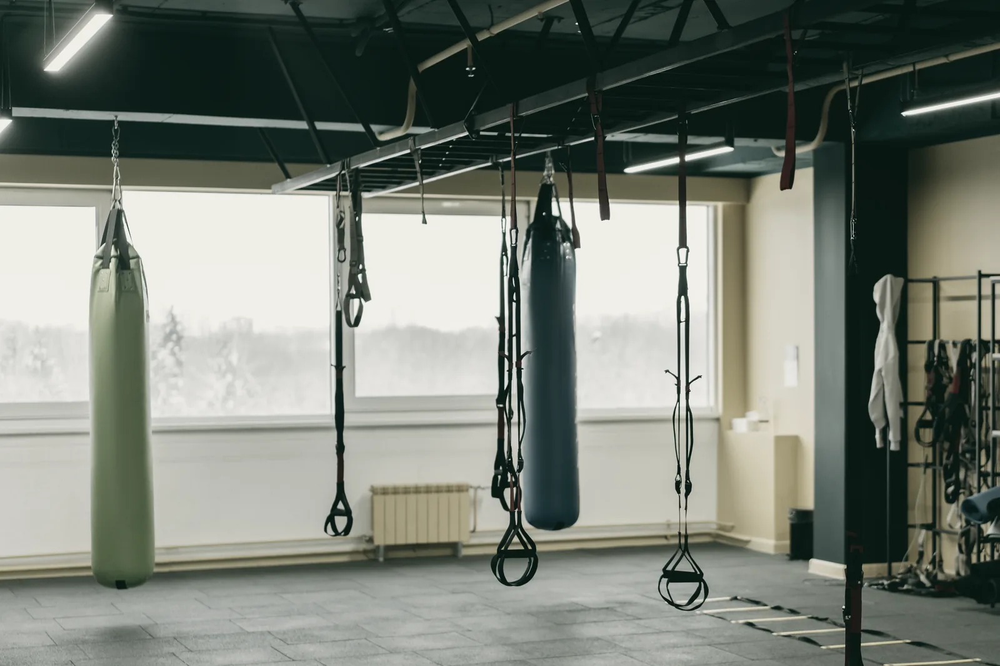
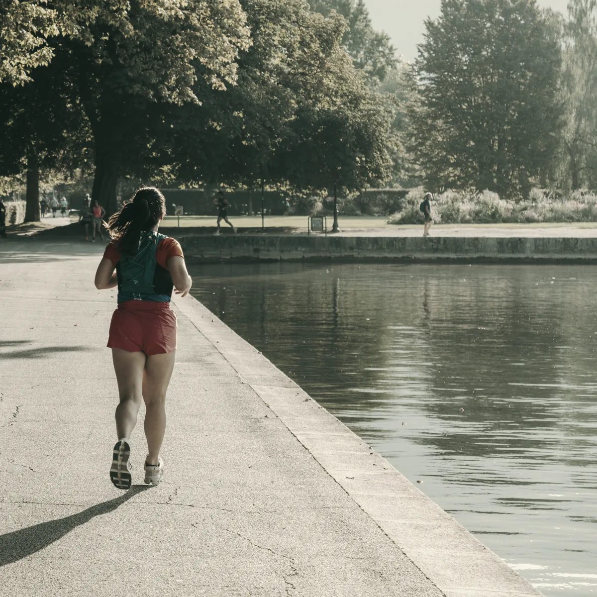

1 tréning
25€
60 minút, jeden na jedného
Na vyskúšanie alebo keď sa nedá chodiť pravidelne. Rovnako stojí aj prvý tréning.
RezervovaťUkážka webu od ARLing, vymyslená prevádzka. Švih, tréner Rado, adresa aj čísla sú vymyslené.
Rado osobný tréner, Trenčín
Prvý tréning
Vráťte pohybu švih.
Osobný tréning sily a mobility v Trenčíne. Jeden na jedného, v posilňovni alebo na nábreží Váhu, bez čakania na stroj.
Tri ciele, s ktorými sa dá začať. Často sa prekrývajú a to je v poriadku.

Chcete zdvihnúť viac ako minulý mesiac a vedieť prečo. Najprv technika, potom váha.
Drep · Mŕtvy ťah · Tlak nad hlavu · Švih s kettlebellom
Celý deň sedíte a chcete sa hýbať voľnejšie. Mobilita bokov a hrudníka, pevný stred tela a krátke cviky, ktoré zvládnete aj pri stole.
Medvedí plaz · Mŕtvy chrobák · Otvorenie hrudníka
Chcete vybehnúť schody bez zastavenia alebo sa pripraviť na túru. Intervaly, švihadlo a krátke okruhy v tempe, ktoré udržíte.
Švihadlo · Intervaly · Nosenie kettlebellov
Pre koho Švih nie je: pre toho, kto chce zhodiť desať kíl za mesiac. Také sľuby nedávam. Ak vás niečo bolí, najprv k lekárovi alebo fyzioterapeutovi, potom na tréning.
Šesťdesiat minút, po ktorých viete, kde ste a čo ďalej. Prvý tréning stojí ako každý iný, 25 €.
00:00 až 10:00
Čo chcete dosiahnuť, koľko času týždenne máte a čo vás doteraz brzdilo. Žiadne váženie ani fotky.
10:00 až 25:00
Drep, predklon, kľuk a rovnováha na jednej nohe. Hľadám, kde sa pohyb zasekne, nie chyby.
25:00 až 50:00
Skutočná séria. Naučíte sa švih s kettlebellom a dva cviky, ktoré vybral test.
50:00 až 60:00
Tri cviky na 15 minút, napísané tak, aby ste ich zvládli sami. Ešte v ten deň ich máte v e-maile.

„Na tréningu som len s vami. Telefón mám v taške.“
Na vašom webe tu bude vaša fotka, certifikáty a váš príbeh. Rado, jeho prax aj citát sú pre ukážku vymyslené.
Ceny sú za 60 minút tréningu jeden na jedného. Vstup do posilňovne sa platí pri vstupe, na nábreží nič.
25€
60 minút, jeden na jedného
Na vyskúšanie alebo keď sa nedá chodiť pravidelne. Rovnako stojí aj prvý tréning.
Rezervovať220€
22 € za tréning
Dva tréningy týždenne a plán domov medzi nimi. Využijete do 4 mesiacov.
Chcem balík40€ mesačne
plán na mesiac, bez viazanosti
Raz týždenne mi pošlete video, skontrolujem techniku a upravím plán podľa toho, ako vám to ide.
Chcem plánV posilňovni celý rok, od apríla do októbra aj vonku na nábreží Váhu.

Švihadlová 7, 911 01 Trenčín. Závesné popruhy, vrecia, kettlebelly, činky a dosť miesta na švih. Šatne so sprchami.

Na nábreží najprv rozklusanie po promenáde, potom odporová guma a kettlebell na tráve. Presné miesto stretnutia vám pošlem v správe deň vopred.
Termín si dohodneme podľa vás, aj skoro ráno pred prácou.
Ak tu odpoveď nenájdete, napíšte mi. Odpisujem do 24 hodín.
Áno. Prvý tréning je hlavne o tom, kde začať. Váhu aj tempo volím podľa vás, nie podľa toho, čo zvládne niekto iný.
Športové oblečenie, čistú obuv do posilňovne, fľašu vody a uterák. Na nábrežie obuv, v ktorej sa dá behať po tráve.
Na začiatok odporúčam dva tréningy týždenne a krátky plán doma. Presnejšie vám to poviem po prvom tréningu.
Kilogramy nesľubujem. Pomôžem vám trénovať pravidelne a s dobrou technikou. Jedálniček nerobím, na to je výživový poradca.
Najprv to ukážte lekárovi alebo fyzioterapeutovi. S jeho súhlasom upravím cviky tak, aby ste trénovali bezpečne.
Správou najneskôr 24 hodín vopred, bez poplatku. Pri neskoršom zrušení sa tréning počíta.
Napíšte, kedy sa vám hodí, ozvem sa do 24 hodín. Alebo zavolajte.